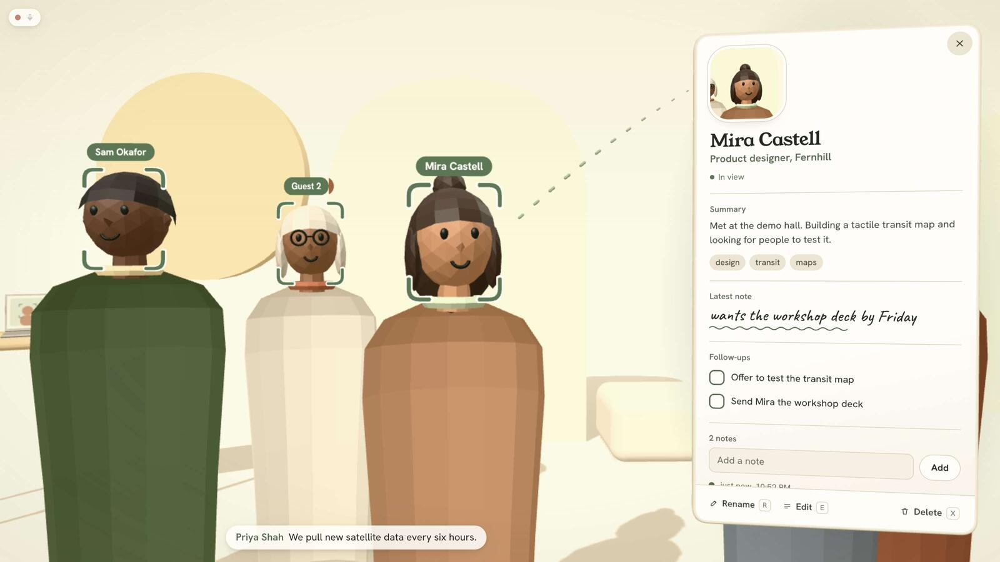

Hazel
Built for Meta AI glasses
Notes for the conversations you have in person.
How it works
-
Your glasses see who is there.
The camera in the frame finds each face in view and locks on to it.
-
A card opens beside them.
Name, role and what you talked about, next to the person it belongs to.
-
What gets said becomes notes and follow-ups.
Speech is transcribed as you talk and filed under the right person, and promises turn into follow-ups.
Granola turns calls into notes. Hazel does it for the conversations you have in person.
Made for Ray‑Ban Meta (Gen 2) and Meta Ray‑Ban Display
On the stage below, the people are simulated. In the real product they are the people in front of you, seen through the glasses.
The iPhone relay app is built on Meta’s Wearables Device Access Toolkit.
An independent hackathon prototype. Not affiliated with, sponsored or endorsed by Meta Platforms, Inc. Meta, Ray‑Ban Meta and Meta Ray‑Ban Display are trademarks of their respective owners.
Try it on a room of made-up people
This is the product’s own interface, running on a simulated room instead of a camera. Tap a moving head to open that person’s card, switch to someone else, or rename a guest.

How it is built
Three devices in a line. The glasses capture, the phone passes it on, the laptop does the work.
-
Meta AI glasses
The camera and microphones on the frame.
-
iPhone relay
An app built on the Wearables Device Access Toolkit passes video frames and audio on over the local network.
-
Laptop
Finds and matches faces, transcribes speech, and serves the card you just used.
Face detection and matching run on the laptop with OpenCV’s YuNet and SFace models. Speech understanding uses Google’s Gemini API: each short speech segment is sent to Gemini, which returns the transcript, any name that was said, a summary and the follow-ups. Segments that sound like background music are filtered out first, and if Gemini is unavailable a Whisper model on the laptop takes over.
The ad
Thirteen seconds. The scenes at the top of this page are the same film, run by your scroll.